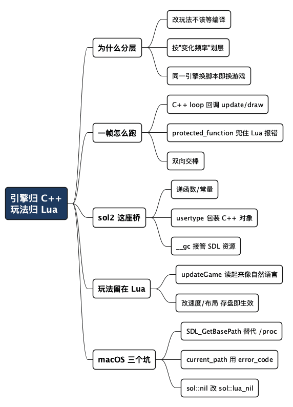

引擎归 C++，玩法归 Lua：一个打砖块游戏的分层写法
Posted on 五 02 10月 2026 in Tech
| Abstract | 引擎归 C++，玩法归 Lua：一个打砖块游戏的分层写法 |
|---|---|
| Authors | Walter Fan |
| Category | Tech |
| Status | v1.0 |
| Updated | 2026-10-02 |
| License | CC-BY-NC-ND 4.0 |
大纲
展开看看
- 一个改速度要等三分钟的痛点：为什么纯 C++ 写游戏改起来这么烦
- 分层这条线：C++ 当引擎，Lua 当玩法，谁快变谁上脚本
- 一帧是怎么跑起来的：C++ 的主循环怎么回调 Lua 的 update / draw
- sol2 怎么把 C++ 递给 Lua：注册函数、包装 usertype、用 GC 管 SDL 资源
- 玩法为什么留在 Lua：看 game.lua 里那段碰撞逻辑
- 移植到 macOS 踩的三个坑：可执行文件目录、current_path 抛异常、sol::nil
- 总结：这套分层适合谁，不适合谁
自己拿 C++ 写过小游戏的人，大概都体会过这么一个时刻：小球飞得太快了，你想把速度从 90 调成 70，一个数字的事。结果呢——改完源码，等 CMake 增量编译，等链接，运行，看一眼，还是太快，再改一次，再等一遍。一下午就耗在"改数字—编译—看效果"这个循环里。
问题不在 C++ 本身，而在于你把"每天都要改的东西"和"几乎不动的东西"编译在了一起。窗口怎么创建、纹理怎么渲染、音频怎么播放，这些底层一旦写对就很少动；而小球速度、砖块布局、什么时候播哪个音效，这些是你每天都在调的玩法。把它们捆在一个二进制里，等于让最稳定的代码拖累最爱变的代码。
这篇讲一种把两者拆开的写法：C++ 只当引擎，玩法整个搬到 Lua。载体是一个真实的开源项目 eliasdaler/sdl_breakout——一个用 SDL 做的打砖块，作者刻意把 C++ 和 Lua 分得很干净，整个游戏逻辑是 Lua 写的，C++ 那层小到可以叫"engine"。读完你会拿到：这套分层的边界划在哪、sol2 这个绑定库怎么把 C++ 递给 Lua、以及我把它移植到 macOS 时踩的三个坑。
- 一句话立住主张：引擎归 C++，玩法归 Lua——慢变的底层用编译语言锁死，快变的玩法用脚本随时改。
- 一句话划清边界：这不是"用 Lua 替代 C++"，而是让两者各干自己擅长的活。
分层这条线划在哪
先把边界说清楚，不然容易理解成"把 C++ 能力削一半塞给 Lua"。
这个项目里有一个叫 edge 的目录，是 C++ 写的引擎；还有一个 games/breakout 目录，游戏逻辑几乎全在里面的 .lua 文件里。分工是这样的：
| 层 | 语言 | 负责什么 | 变化频率 |
|---|---|---|---|
| 引擎 | C++ + SDL | 窗口、渲染、音频、字体、键盘、主循环 | 低，写对就不动 |
| 玩法 | Lua | 小球运动、碰撞判定、砖块布局、菜单、播哪个音效 | 高，天天调 |
| 桥 | sol2 | 把 C++ 的类和函数暴露成 Lua 能调的东西 | 中，加新能力时才动 |
判断一段代码该放哪层，我用一个土办法：问它多久改一次。"小球撞到砖块后往哪弹"这种规则，一个通宵能改二十版，放 Lua；"怎么把一张 PNG 变成 GPU 纹理"这种，写对一次就是一年，放 C++。
慢变的东西用编译换性能，快变的东西用脚本换迭代速度。 分层的本质不是语言之争，是把不同变化频率的代码隔开，别让它们互相拖累。
C++ 那层小到什么程度？主入口 games/breakout/src/main.cpp 一共十几行：
int main(int argc, char* argv[])
{
edge::GameParams params{
.screenWidth = 256,
.screenHeight = 240,
.screenScale = 3,
.windowTitle = "SDL Breakout",
};
edge::Game game;
game.start(params);
return 0;
}
C++ 侧只声明"我要一个多大的窗口、叫什么名字"，然后 start() 一把梭。至于窗口里跑什么游戏，main.cpp 一无所知——它只会去加载一个叫 scripts/game.lua 的文件。换句话说，同一个引擎二进制，换一套 Lua 脚本就是另一个游戏。项目里那个 games/minimal 就是证据，它的 game.lua 是空的：
local class = require 'lib.middleclass'
local Game = class("Game")
function Game:initialize() end
function Game:update(dt) end
function Game:draw() end
return Game:new()
三个空函数，能跑，只是画面上什么都没有。这就是引擎和玩法之间的契约：Lua 交出一个带 update 和 draw 的对象，剩下的引擎来驱动。
一帧是怎么跑起来的
要理解这套分层，得先看清 C++ 和 Lua 在一帧里怎么来回交棒。
引擎的心脏是 edge/src/Game.cpp 里的 loop()，一个标准的固定时间步长游戏循环。剥掉计时的细节，核心就两句：
// update：把逻辑交给 Lua
luautil::safeSelfCall(luaGame, "update", dt);
// render：把画面交给 Lua
luautil::safeSelfCall(luaGame, "draw");
luaGame 是什么？是 init() 阶段执行 scripts/game.lua 后拿到的那个 Lua 对象——也就是上面 return Game:new() 返回的东西。引擎每一帧做两件事：调它的 update(dt) 让玩法推进一步，再调它的 draw() 让玩法把自己画出来。
safeSelfCall 这个包装（在 edge/src/LuaUtil.h）值得看一眼，因为它体现了跨语言调用最容易被忽略的一点——Lua 里的错误不能让 C++ 直接崩掉：
template<typename... T>
void safeSelfCall(sol::table& t, const char* name, T&&... args)
{
sol::protected_function f = t[name];
sol::protected_function_result result = f(t, std::forward<T>(args)...);
if (!result.valid()) {
sol::error err = result;
std::cout << err.what();
}
}
sol::protected_function 是关键。它保证：就算你在 game.lua 里写了个 nil 上取字段这种低级错误，引擎也不会段错误退出，而是把 Lua 的报错信息打印出来，游戏继续跑。对脚本层来说这太重要了——你天天在改 Lua，天天会写错，要是每个笔误都让整个进程崩掉，那这套分层的迭代优势就没了。
用一张图看清一帧里的交棒关系：
C++ 引擎 (Game::loop) Lua 玩法 (game.lua)
───────────────────── ────────────────────
│
│ poll SDL events (退出/键盘)
│
│ safeSelfCall(luaGame,"update") ──▶ Game:update(dt)
│ 读输入、算碰撞、动小球
│ ◀─────────────────────────────── （中途会回调 C++ 能力，见下节）
│
│ safeSelfCall(luaGame,"draw") ──▶ Game:draw()
│ sprite:draw() / drawRect()...
│ ◀───────────────────────────────
│
│ SDL_RenderPresent (上屏)
│
└──▶ 下一帧
注意箭头是双向的。C++ 调 Lua 的 update，Lua 在 update 里又会回头调 C++ 的能力（比如"播个音效""这个键按下了没"）。这就引出下一个问题：Lua 凭什么能调 C++？
sol2 怎么把 C++ 递给 Lua
Lua 本身是个"什么都不会"的小语言——不会开窗口，不会画图，连读键盘都不会。它能干活，全靠宿主（这里是 C++ 引擎）把能力"注册"给它。这个注册工作，项目用的是 sol2，一个 header-only 的 C++/Lua 绑定库。所有绑定都集中在一个文件：edge/src/LuaBindings.cpp。
sol2 的好处是把绑定写得几乎像普通 C++。有三类东西要递给 Lua，从易到难：
1. 递一个函数 / 一个常量
最简单，直接赋值：
sol::table edge = lua["edge"].force();
// 递一个函数：Lua 里 edge.isKeyPressed(...) 就能用
edge["isKeyPressed"] = isKeyPressed;
// 递几个常量：Lua 里 edge.KEY_LEFT 就是 SDL 的扫描码
edge["KEY_UP"] = SDL_SCANCODE_UP;
edge["KEY_LEFT"] = SDL_SCANCODE_LEFT;
edge["KEY_RIGHT"] = SDL_SCANCODE_RIGHT;
edge 是一个 Lua table，相当于给引擎能力开的一个"命名空间"。递进去之后，Lua 侧就能写 edge.isKeyPressed(edge.KEY_LEFT)——这正是 game.lua 里读方向键的写法。C++ 函数 isKeyPressed 内部调的是 SDL_GetKeyboardState，但 Lua 完全不用知道 SDL 的存在。
2. 递一个 C++ 对象（usertype）
这是 sol2 真正省事的地方。以 Sprite（精灵，游戏里能画出来的图元）为例，C++ 侧是个普通结构体：
struct Sprite {
Sprite(Texture* texture) : texture(texture) { /* ... */ }
void draw(double x, double y) const { /* SDL_RenderCopy... */ }
void setTextureRect(int x, int y, int w, int h);
// ...
};
用 sol2 的 new_usertype 把它注册成 Lua 里的一个类型，把方法一个个挂上去：
auto su = edge.new_usertype<Sprite>("Sprite");
su["setTextureRect"] = &Sprite::setTextureRect;
su["draw"] = &Sprite::draw;
// 给 Lua 一个工厂函数来造 Sprite
edge["newSprite"] = [&lua](Texture* texture) {
return sol::object(lua, sol::in_place_type<Sprite>, texture);
};
注册完，Lua 侧就能这么用，跟操作一个原生 Lua 对象没差别：
local sprite = edge.newSprite(texture)
sprite:setTextureRect(0, 0, 16, 16)
sprite:draw(100, 120)
sprite:draw(...) 里的冒号，会把 sprite 自己当第一个参数传给 C++ 的 Sprite::draw。一个 Lua 对象背后其实是一块 C++ 内存，sol2 把这层完全藏起来了。
3. 用 GC 接管 SDL 资源（最容易出事的一环）
这里有个跨语言最经典的坑：SDL 的纹理、字体、音频都是 C 侧手动管理的资源，用完必须显式释放（SDL_DestroyTexture 之类）。可 Lua 是自动垃圾回收的，你没法在 Lua 里手动 free。谁来释放？
sol2 的解法是把 C++ 对象的析构挂到 Lua 的 GC 元方法上。看 Texture：
struct Texture {
void destroy() // 交给 Lua GC 调用
{
assert(texture);
SDL_DestroyTexture(texture);
texture = nullptr;
}
SDL_Texture* texture = nullptr;
int width = 0, height = 0;
};
void registerTexture(sol::state& lua, sol::table& edge)
{
auto dsu = edge.new_usertype<Texture>("Texture");
// 关键这一行：Lua GC 回收这个对象时，自动调 destroy()
dsu[sol::meta_function::garbage_collect] = &Texture::destroy;
edge["loadTexture"] = loadTexture;
}
sol::meta_function::garbage_collect 对应 Lua 的 __gc 元方法。这么一挂，效果就是：Lua 侧的一个 texture 变量没人引用了，Lua GC 会在某个时刻回收它，回收时自动调用 C++ 的 destroy()，把底层 SDL 纹理释放掉。 写 Lua 的人完全不用操心 C 侧的内存——他只管 local tex = edge.loadTexture("res/ball.png")，用完不管，剩下的交给 GC。
这就是分层的红利落到实处的地方：C++ 侧把资源生命周期这种最容易出错的活兜住，Lua 侧的人可以像写脚本一样放松地写。
项目里 Texture、Font、Sound、Music、DrawableString 全是这个套路——一个 destroy() 方法 + 一行 garbage_collect 注册。看懂一个，就看懂了全部。
玩法为什么值得留在 Lua
绑定讲完，回头看看 Lua 侧到底写了什么，你就明白为什么这些东西留在脚本里更舒服。
game.lua 里的 updateGame 是每帧的玩法主逻辑，读起来几乎就是自然语言：
function Game:updateGame(dt)
local ball = self.ball
local border = self.border
local paddle = self.paddle
if logic.checkBallLost(ball, border) then
self.soundCache:playSound("ball_fall")
self:showMenu(menu.State.GameOver)
do return end
end
if logic.checkGameWin(self.blocks) then
self:showMenu(menu.State.Win)
do return end
end
-- 处理各种碰撞，撞到了就播对应音效
if logic.handleBallPaddleCollision(ball, paddle) then
self.soundCache:playSound("ball_collision_paddle")
end
if logic.handleBallBorderCollision(ball, border) then
self.soundCache:playSound("ball_collision")
end
if logic.handleBallBlocksCollision(ball, self.blocks) then
self.soundCache:playSound("ball_collision")
end
-- 按速度推进小球位置
ball.pos.x = ball.pos.x + ball.vel.x * dt
ball.pos.y = ball.pos.y + ball.vel.y * dt
end
现在回到开头那个"改小球速度"的痛点。在这套结构里，速度写在 game.lua 的 initialize 里：
ball.speed = em.Vec2:new(90, 90)
把 90 改成 70，存盘，重跑，立刻生效——不碰 C++，不用编译。 想调砖块布局？改 numBlocksX / numBlocksY 两个数字。想换碰撞后小球怎么弹？改 logic.lua 里的函数。这些正是你在做游戏时改得最频繁的东西，全都落在了不需要编译的那一层。
而 C++ 侧那些"怎么把纹理拷到屏幕上""怎么和音频设备打交道"，一次都没动。这就是分层的收益：你花在"改玩法—看效果"上的时间，从分钟级降到了秒级。
移植到 macOS 踩的三个坑
这个项目原本主要在 Linux / Windows 上跑。我把它拉到 macOS（Apple Silicon + Apple clang）上编译运行时，撞了三处，都改在 edge/src/Game.cpp 里。下面的改动在我本机实测通过；三处独立，可以对照原始逻辑单独看。完整改动我推到了自己的 fork：github.com/walterfan/sdl_breakout。
坑一：找不到可执行文件所在目录
引擎启动时要把工作目录切到可执行文件旁边，好用相对路径找 scripts/ 和 res/。原代码在非 Windows 分支上读的是 /proc/self/exe：
// 原代码：依赖 Linux 特有的 /proc
if (std::filesystem::exists("/proc/self/exe")) {
return std::filesystem::read_symlink("/proc/self/exe").parent_path();
}
return std::filesystem::path();
macOS 没有 /proc 这套东西，这段直接返回空路径，后面全崩。改法是用 SDL 自带的跨平台 API SDL_GetBasePath()——它在每个平台上都能给出可执行文件目录，反正已经依赖 SDL 了，不如用它抹平差异：
// 改后：用 SDL 的跨平台 API，顺手用 unique_ptr 管住它返回的 C 字符串
std::unique_ptr<char, decltype(&SDL_free)> basePath(SDL_GetBasePath(), SDL_free);
if (!basePath) {
fprintf(stderr, "Unable to determine executable directory: %s\n", SDL_GetError());
std::exit(1);
}
return std::filesystem::path(basePath.get());
SDL_GetBasePath() 返回的字符串需要调用方用 SDL_free 释放。这里用 unique_ptr 加自定义删除器 SDL_free 把它兜住，比手写 SDL_free 更省心，异常路径下也不会漏。
坑二：切换工作目录时抛异常
原代码这么切目录：
std::filesystem::current_path(getExecutableDir());
std::filesystem::current_path 有两个重载：不带 error_code 参数的那个，一出错就抛异常。移植过程中路径一旦有问题，抛出来的异常没人接，程序直接终止，还看不清是哪一步挂的。改成带 error_code 的版本，把错误变成可检查的返回值，自己打清楚日志再退出：
std::error_code pathError;
std::filesystem::current_path(getExecutableDir(), pathError);
if (pathError) {
fprintf(stderr, "Unable to use executable directory: %s\n",
pathError.message().c_str());
std::exit(1);
}
这条不算 macOS 独有的问题，但移植期间路径最容易出岔子，把隐式抛异常换成显式检查，排错省了不少事。
坑三：sol::nil 在新版 sol2 上编不过
清理 Lua 状态时，原代码把游戏对象置空：
luaGame = sol::nil;
我用的 sol2 版本里 sol::nil 这个名字不认了，得用 sol::lua_nil：
luaGame = sol::lua_nil;
原因是 nil 太容易和别处的宏或标识符撞名，新版 sol2 用 lua_nil 这个更保险的名字。这类库升级带来的重命名，编译器会直接报"未声明的标识符"，照着换名字就行——只是第一次撞上，未必想得到是版本差异。
一张表收一下这三处：
| 坑 | 症状 | 改法 |
|---|---|---|
/proc/self/exe |
macOS 无 /proc，工作目录设成空，找不到资源 |
换 SDL_GetBasePath()，用 unique_ptr + SDL_free 管字符串 |
current_path 抛异常 |
路径出错时程序直接终止，看不清哪一步 | 用带 std::error_code 的重载，显式检查并打日志 |
sol::nil |
新版 sol2 编不过，报未声明标识符 | 改成 sol::lua_nil |
总结：分层不是炫技，是把变化频率隔开
回到最开始那个改速度等三分钟的循环。这套 C++ + Lua 的分层，本质上做的就一件事：把你天天要改的玩法，从需要编译的那一层里挪出来。 引擎归 C++——窗口、渲染、音频、资源生命周期，这些慢变、对性能敏感、写错了会崩的东西，用编译语言锁死；玩法归 Lua——碰撞、速度、布局、音效触发，这些快变、你天天在调的东西，用脚本随时改、存盘就生效。中间用 sol2 这座桥连起来：注册函数、包装 usertype、把 SDL 资源的释放挂到 Lua 的 GC 上。
这套写法适合谁？适合玩法会反复迭代的项目——独立小游戏、原型验证、需要给策划或非 C++ 同学开放调参的场景。不适合谁？如果你的东西就是个固定不变的 demo，或者性能敏感到每一帧都要抠 C++（比如玩法逻辑本身就是热点），那多一层脚本的开销和跨语言调用成本，反而是负担。
一句话记住取舍：
能编译一次就不动的，交给 C++；会天天改的，交给 Lua。 分层划错了地方——把玩法编进 C++、或者把渲染写进 Lua——两头的好处都拿不到。
如果你也想上手，路径很短：clone 仓库（macOS 可以直接用我这份带改动的 fork github.com/walterfan/sdl_breakout），git submodule update --init --recursive 把 SDL 和 sol2 拉全，按 README 编译跑起来，然后别改 C++，先去 game.lua 里把小球速度改一下，感受一下"存盘即生效"。这一下，比看十遍架构图都管用。
全文思维导图
@startmindmap
<style>
mindmapDiagram {
node {
BackgroundColor #F8F9FA
RoundCorner 10
Padding 10
FontSize 13
}
:depth(0) {
BackgroundColor #1E3A5F
FontColor white
FontSize 18
FontStyle bold
}
:depth(1) {
FontSize 15
FontStyle bold
}
:depth(2) {
FontSize 13
}
}
</style>
* 引擎归 C++\n玩法归 Lua
** 为什么分层
*** 改玩法不该等编译
*** 按"变化频率"划层
*** 同一引擎换脚本即换游戏
** 一帧怎么跑
*** C++ loop 回调 update/draw
*** protected_function 兜住 Lua 报错
*** 双向交棒
** sol2 这座桥
*** 递函数/常量
*** usertype 包装 C++ 对象
*** __gc 接管 SDL 资源
** 玩法留在 Lua
*** updateGame 读起来像自然语言
*** 改速度/布局 存盘即生效
** macOS 三个坑
*** SDL_GetBasePath 替代 /proc
*** current_path 用 error_code
*** sol::nil 改 sol::lua_nil
@endmindmap

本作品采用知识共享署名-非商业性使用-禁止演绎 4.0 国际许可协议进行许可。 欢迎在我的个人网站 https://www.fanyamin.com 访问原文并评论。